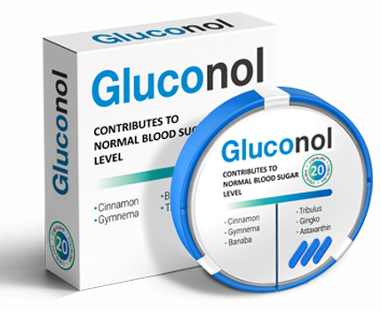

Μόνο η γνώση διακρίνει έναν άρρωστο από έναν υγιή, γνώμη ειδικού για τη θεραπεία του διαβήτη
Σύμφωνα με τον Ρίτσαρντ Τάιλερ, έναν από τους κορυφαίους ενδοκρινολόγους στις Ηνωμένες Πολιτείες με πάνω από 30 χρόνια εμπειρία, η ισόβια κατάσταση του διαβήτη είναι μια κοινή και εσφαλμένη αντίληψη. Σε αυτόν απευθύνονται ασθενείς από όλο τον κόσμο, Αμερικανοί, Καναδοί και Ευρωπαίοι, συμπεριλαμβανομένων διαφόρων διασημοτήτων. Είναι επίσης γράψει 9 μονογραφίες, 37 άρθρα και πολυάριθμων δημοσιεύσεων σε επιστημονικά περιοδικά.

Ο κ. Τάιλερ επιμένει ότι η συντριπτική πλειονότητα των περιπτώσεων διαβήτη τύπου 2 μπορεί να θεραπευτεί με σύγχρονα φάρμακα.
- Προβλήματα ενδοκρινολογίας
- Γιατί δεν μπορεί να θεραπευτεί με μετφορμίνη;
- Σύγχρονες μέθοδοι θεραπείας του διαβήτη.
Γεια σας! Είμαστε πολύ ευγνώμονες που δεχτήκατε να μας δώσετε μια συνέντευξη. Για έναν διάσημο γιατρό αυτό είναι σπάνιο.
Νομίζω ότι κάνετε καλή δουλειά. Το να λέτε την αλήθεια στους ανθρώπους είναι αξιέπαινο. Θα χαρώ να απαντήσω στις ερωτήσεις σας.
Εντάξει. Έχουμε ακούσει πολλά για την κατηγορηματική σας θέση για τον διαβήτη. Παρά την κοινή γνώμη, ισχυρίζεστε ότι ο διαβήτης τύπου 2 είναι ιάσιμος;
Ακριβώς. Επιμένω ότι ο διαβήτης μπορεί και πρέπει να θεραπεύεται.
Δυστυχώς, ως επί το πλείστον, οι ασθενείς βασίζονται σε φάρμακα που είναι ξεπερασμένα από επιστημονική άποψη. Οι άνθρωποι πιστεύουν ότι τέτοια φάρμακα είναι δοκιμασμένα στο χρόνο, αλλά στην πραγματικότητα αυτή η προσέγγιση μειώνει τη ζωή τους.
Δηλαδή είστε κατά της παραδοσιακής θεραπείας;
Όχι. Νομίζω ότι είναι καιρός να αφήσουμε τα φάρμακα που χρησιμοποιήθηκαν πριν από 100 χρόνια. Δεν είναι πιο αποτελεσματικά και χρήσιμα από τις βδέλλες και την αφαίμαξη. Και μερικές φορές ακόμη και επικίνδυνα.
Καταρχάς, εννοώ φάρμακα με βάση τη μετφορμίνη. Υπάρχουν πολλά από αυτά: Bagomet, Glyconon, Novamet, Glucophage... Μπορώ να απαριθμώ για πολύ καιρό, υπάρχουν περίπου 20 διαδεδομένες επιλογές. Όλα αυτά τα χάπια, λοιπόν, δεν είναι απλώς άχρηστα αλλά και επιβλαβή για τον οργανισμό.

Διεγείρουν μια υπερβολική παραγωγή ινσουλίνης. Ας μην ξεχνάμε την υψηλή συγκέντρωση γλυκόζης. Οι υπερβολικές ουσίες κάνουν το αίμα πιο παχύρρευστο, όπως η καραμέλα.
- Τα αγγεία φθείρονται αμέσως: η επιβράδυνση της ροής του αίματος εμποδίζει τον καθαρισμό των τοιχωμάτων, με αποτέλεσμα η χοληστερόλη να συσσωρεύεται και να σχηματίζει πλάκες. Εμφανίζεται υπέρταση, συχνός σύντροφος του διαβήτη.
- Το ήπαρ και τα νεφρά δεν μπορούν να αντιμετωπίσουν τόσες πολλές ορμόνες (σας θυμίζω ότι η ινσουλίνη είναι ορμόνη), οι ιστοί τους φθείρονται και αναπτύσσονται άλλες ασθένειες.
- Η ορμονική ανεπάρκεια προκαλεί την ανάπτυξη άτυπων κυττάρων και έτσι προκύπτουν όγκοι. Και μιλάμε για μια άλλη τρομερή ασθένεια, τον καρκίνο.
Είναι σαν να υπερφορτώνεις μια ηλεκτρική συσκευή, όταν ολόκληρο το σύστημα αποτυγχάνει λόγω αλυσιδωτής αντίδρασης υπάρχει μεγάλος κίνδυνος διαφόρων παθολογιών.
Και σε τι ακριβώς οδηγεί αυτή η θεραπεία;
Οι συνέπειες της χρήσης μετφορμίνης είναι θλιβερές:
- Πεπτικές διαταραχές
Ασθένειες που κυμαίνονται από διάρροια έως έλκη στομάχου. Δεδομένων των προβλημάτων με το μεταβολισμό των υδατανθράκων στους διαβητικούς, αυτό είναι πραγματικά επικίνδυνο.
- Υπερταση
Οι ξαφνικές αυξήσεις της αρτηριακής πίεσης μειώνουν σοβαρά την ποιότητα ζωής του ασθενούς. Προκαλούν πονοκεφάλους, εμβοές και κρίσεις πανικού.
- Κίρρωση
Τα υγιή ηπατικά κύτταρα αντικαθίστανται από συνδετικό ιστό. Ως αποτέλεσμα, οι τοξίνες δεν απομακρύνονται από τον οργανισμό, αλλά εξαπλώνονται σε όλο το σώμα με το αίμα, δηλητηριάζοντας τα όργανα.
- Πέτρες στα νεφρά
Οι διαβητικοί κινδυνεύουν συνεχώς να αναπτύξουν νεφροπάθεια, νεφρική ανεπάρκεια. Η ουρολιθίαση μπορεί να επιδεινώσει την κατάσταση.
- Ανεύρυσμα
Η επιδείνωση των αιμοφόρων αγγείων οδηγεί σε αυθόρμητη αιμορραγία με θανατηφόρο αποτέλεσμα.
Η εμφάνιση επιπλοκών είναι δύσκολο να προβλεφθεί, καθώς εξαρτάται από μια σειρά παραγόντων: διάρκεια θεραπείας, φάρμακα που λαμβάνονται, κληρονομική προδιάθεση, τρόπος ζωής κ.λπ. Ωστόσο, το ποσοστό των ασθενών που έχουν βιώσει τις συνέπειες της χρήσης της μετφορμίνης είναι εξαιρετικά υψηλή. Σύμφωνα με προσωπικές μου παρατηρήσεις περίπου το 90%.
Αν η μετφορμίνη είναι τόσο επικίνδυνη, γιατί τη συνταγογραφούν οι γιατροί;
Βλέπετε, οι περισσότεροι γιατροί αποδίδουν την επιδείνωση της υγείας των ασθενών τους στον διαβήτη. Η μετφορμίνη έχει πραγματικά βραχυπρόθεσμη επίδραση, η αύξηση της ποσότητας ινσουλίνης βοηθά στη μείωση των επιπέδων γλυκόζης, αλλά με την πάροδο του χρόνου η δόση πρέπει να μεγαλώνει. Όσο μεγαλύτερη είναι η θεραπευτική αγωγή, τόσο περισσότερη μετφορμίνη απαιτείται και τόσο περισσότερη ινσουλίνη εισέρχεται στο αίμα.
Πονοκέφαλοι, κόπωση, προβλήματα στα νεφρά είναι τυπικά για τους διαβητικούς, επομένως είναι εύκολο να τα φορτώσουμε όλα στην ασθένεια. Πάρτε περισσότερη μετφορμίνη, θα πει ο γιατρός.
Είναι ένας φαύλος κύκλος.
Επίσης, ας μην ξεχνάμε το χρηματικό κίνητρο. Τα φάρμακα με βάση τη μετφορμίνη είναι οικονομικά στην παρασκευή τους. Συχνά, οι φαρμακοποιοί διαπραγματεύονται με τους γιατρούς για να συστήσουν ένα συγκεκριμένο φάρμακο. Έτσι όλοι κερδίζουν, εκτός από τους ασθενείς.
Η περιγραφή σας μοιάζει με...
Ναι, εγώ ο ίδιος συχνά σκέφτομαι ότι αυτό θυμίζει εθισμό στα ναρκωτικά. Διατηρώντας την ψευδαίσθηση ότι ο διαβήτης είναι ισόβιος, οι ασθενείς δημιουργούν μια αυξανόμενη ανάγκη για μετφορμίνη.

Έτσι το πρώτο πράγμα που πρέπει να κάνετε είναι να απαλλαγείτε από την προκατάληψη.
Πως τότε πρέπει να θεραπεύεται ο διαβήτης; Να ψάχνουν οι άνθρωποι για άλλα φάρμακα που διεγείρουν την παραγωγή ινσουλίνης;
Όχι. Ο διαβήτης είναι μια πολύπλοκη ασθένεια που επηρεάζει ολόκληρο τον ανθρώπινο οργανισμό. Δεν μπορείτε απλώς να αναγκάσετε τον οργανισμό σας να παράγει περισσότερη ινσουλίνη: αυτό δεν λύνει προβλήματα, αλλά δημιουργεί νέα. Η μετφορμίνη είναι μια εξαιρετική απόδειξη αυτού.
Για να θεραπεύσετε τον διαβήτη, χρειάζεστε πολύπλοκα φάρμακα που όχι μόνο διατηρούν τα επίπεδα ινσουλίνης, αλλά αυξάνουν επίσης την ευαισθησία των κυττάρων σε αυτήν, ενισχύουν ολόκληρο τον οργανισμό και καταπολεμούν τις επιπλοκές.
Επέλεξα το . Είναι εντελώς φυσικό, σε αντίθεση με τα φάρμακα που βασίζονται στη μετφορμίνη, μια τεχνητά απομονωμένη χημική ένωση. Αυτό σημαίνει ότι δεν έχει παρενέργειες Επιπλέον, περιέχει 28 εκχυλίσματα βοτάνων, προσεκτικά επιλεγμένα έτσι ώστε τα συστατικά να συμπληρώνουν το ένα τα αποτελέσματα του άλλου.
Υπάρχουν πολύ λίγα φάρμακα που μπορούν να συνταγογραφηθούν με ασφάλεια για τον διαβήτη, αλλά το έχει αποδειχθεί ένα καθολικό φάρμακο. Το συνιστώ σε όλους τους ασθενείς μου.
Ακόμα και στις διασημότητες;
Ναι, ακόμη και σε αυτές (γέλια).
 Αναπαράγουμε ένα απόσπασμα από μια
συνέντευξη με τον Τομ Χανκς , ηθοποιό και σκηνοθέτη, και ασθενή του κ. Τάιλερ.
Αναπαράγουμε ένα απόσπασμα από μια
συνέντευξη με τον Τομ Χανκς , ηθοποιό και σκηνοθέτη, και ασθενή του κ. Τάιλερ.
Στα νιάτα μου, ήμουν απερίσκεπτος με την υγεία μου και δεν σκεφτόμουν καν τους κινδύνους της κακής διατροφής. Και το επάγγελμα προϋπόθετε ότι θα προσαρμοζόμουν σε μελλοντικούς ρόλους: για έναν έπρεπε να πάρω κιλά και για τον άλλον να χάσω τα διπλάσια. Δεν θα πρέπει να εκπλήσσομαι πως στα 36 μου είχα ήδη υψηλό σάκχαρο.
Διαγνώστηκα με διαβήτη τύπου 2 το 2013. Τότε κατάλαβα πόσο σοβαρό ήταν. Ο γιατρός είπε ότι θα γινόμουν καλύτερα αν επέστρεφα στα κιλά που είχα στο γυμνάσιο. Παρεμπιπτόντως, 44 κιλά, νομίζω ότι καταλαβαίνετε ότι αυτό είναι αδύνατο.
Δημόσια, αστειευόμουν γι' αυτό, λέγοντας ότι το πρόβλημα ήταν μικρό. Αλλά πρέπει να ομολογήσω, η ετυμηγορία των ενδοκρινολόγων με τρόμαξε. Άλλαξα τον τρόπο ζωής μου, άρχισα να κάνω δίαιτα και ακόμη και να αθλούμαι. Αλλά η κατάστασή μου επιδεινώθηκε, παρά τις προσπάθειές μου. Οι γιατροί έλεγα ότι δεν μπορούσαν να κάνουν τίποτα άλλο για να με βοηθήσουν. Τότε ήταν που πήγα στον γιατρό Τάιλερ»
Δεν εξεπλάγη όταν έμαθε ότι είχα λάβει μετφορμίνη. Και απλά μου συνταγογράφησε ένα νέο φάρμακο. Ήταν το . Μετά από μια εβδομάδα λήψης παρατήρησα ήδη την διαφορά. Και όταν τελείωσα την αγωγή, ούτε που είχα κάποια συμπτώματα. Σε κάθε περίπτωση, θα διευκρινίσω ότι δεν το παίρνω πια, μου ήταν αρκετό.
Φυσικά εξακολουθώ να προσπαθώ να τρώω σωστά, να περπατάω και να αθλούμαι, αλλά τουλάχιστον τώρα μπορώ να επιτρέψω στον εαυτό μου ένα πλούσιο δείπνο. Δεν φοβάμαι πλέον τον διαβήτη και τις συνέπειές του. Όλα χάρη σε αυτό το φάρμακο και, φυσικά, στον γιατρό που το συνέστησε.
Και πόσο διαρκεί η θεραπεία;
Θα είμαι ειλικρινής μαζί σας, όλα εξαρτώνται από την κατάσταση. Δεν πρέπει να υπολογίζετε σε μια άμεση ανάρρωση, καθώς το φάρμακο στοχεύει στην αποκατάσταση και ανανέωση ολόκληρου του οργανισμού. Αυτή είναι μια μακρά και επίπονη διαδικασία, μπορεί να χρειαστούν μήνες.
Όταν όμως τελειώσει, δεν θα χρειαστείτε άλλα φάρμακα. Η υγεία σας θα αποκατασταθεί και το σάκχαρο δεν θα είναι πλέον πρόβλημα για εσάς.
Η ανάρρωση πραγματοποιείται σταδιακά.
- Πρώτα, καθαρίζονται τα αγγεία
Χάρη στο ginkgo biloba, τα τοιχώματα των αιμοφόρων αγγείων γίνονται πιο ανθεκτικά και ελαστικά, αυτό τους επιτρέπει να καθαρίζονται από τη χοληστερόλη και τους θρόμβους αίματος. Στη συνέχεια ενισχύονται μικρά τριχοειδή αγγεία και τα όργανα τροφοδοτούνται με οξυγόνο και χρήσιμες ουσίες.
- Το σάκχαρο στο αίμα μειώνεται
Ο μηχανισμός του πώς λειτουργεί το φάρμακο είναι πολύ σημαντικός. Η συγκέντρωση της γλυκόζης μειώνεται όχι λόγω της ανεξέλεγκτης παραγωγής ινσουλίνης από το πάγκρεας, αλλά λόγω της μείωσης της αντίστασης στην ινσουλίνη.
Θα δώσω μια αναλογία: αντί να ουρλιάζουμε πιο δυνατά, βελτιώνουμε την ακοή, την ικανότητα των κυττάρων να αφομοιώνουν την ινσουλίνη.
- Το περιττά κιλά φεύγουν
Το υπερβολικό βάρος αυξάνει τον κίνδυνο εμφάνισης επιπλοκών στους διαβητικούς, επιδεινώνει την κατάσταση του καρδιαγγειακού συστήματος και το φορτίο σε άλλα όργανα. Ταυτόχρονα, με αυξημένα επίπεδα σακχάρου, είναι πολύ δύσκολο να χάσετε βάρος: ο διαβήτης αμβλύνει το αίσθημα της πείνας.
Η σύνθεση του περιλαμβάνει κανέλα. Εκτός από την υπογλυκαιμική δράση, έχει την ικανότητα να επιταχύνει το μεταβολισμό και προάγει την επεξεργασία του σωματικού λίπους. Αυτός είναι ένας πραγματικός φυσικός καυστήρας λίπους.
- Αποκαθίσταται η λίμπιντο
Η σεξουαλική δυσλειτουργία δεν είναι ασυνήθιστη στους διαβητικούς. Αλλά το λύνει και αυτό το πρόβλημα: το φάρμακο ομαλοποιεί την ορμονική ισορροπία και βελτιώνει την παραγωγή τεστοστερόνης. Από όσο ξέρω, ακόμη και άνδρες άνω των 60 ετών έχουν παρατηρήσει αυτό το αποτέλεσμα κατά τη διάρκεια κλινικών δοκιμών .
- Το σώμα καθαρίζεται
Η φυσική αποτοξίνωση αφαιρεί οτιδήποτε περιττό από τον οργανισμό και το σώμα, έχει πόρους για να ανανεώσει τους ιστούς. Ως αποτέλεσμα, η λειτουργία πολλών οργάνων που έχουν υποστεί βλάβη από την ασθένεια αποκαθίσταται και ταυτόχρονα ενισχύεται η ανοσία.
Όλα αυτά ακούγονται υπέροχα. Αλλά για να είμαι ειλικρινής, θα ήθελα να μάθω πώς εκδηλώνονται όλα.
Εντάξει, θα προσπαθήσω να είμαι πιο προσγειωμένος. Πιθανότατα έχετε ακούσει για το φαινόμενο της πεταλούδας. Έτσι, το ξεκινά μια αλυσιδωτή αντίδραση με τον ίδιο τρόπο.

Από έρευνες ανάμεσα σε ασθενείς, η εικόνα της θεραπείας που αποκόμισα είναι η εξής:
- Η κούραση μειώνεται
Μετά από μια εβδομάδα, εξαφανίζεται η υπνηλία, εξαφανίζεται το αίσθημα συνεχούς κόπωσης. Το εύκολο ξύπνημα και ο πρωινός τόνος θα είναι ένα ευχάριστο ξεκίνημα της ημέρας και την πάροδο του χρόνου θα γίνουν συνήθεια.
- Η διάθεση βελτιώνεται
Μετά από ένα μήνα, οι ασθενείς χαρακτηρίζουν την κατάστασή τους ως συνεχώς καλή. Δεν έχετε δίψα, συνεχή πείνα και συχνοουρία, πολλοί άνθρωποι παύουν να νιώθουν στρες.
- Τα φαγητά που αγαπάτε δεν προκαλούν πλέον ανησυχία
Μετά από μια πλήρης θεραπευτική αγωγή, θα μπορείτε που και που να επιδοθείτε σε γεύματα που πριν δεν μπορούσατε να επιτρέψετε στον εαυτό σας λόγω των ανησυχιών σας για το σάκχαρο.
- Βελτιώνεται η ισορροπία υγρών
Δεν θα σας ενοχλούν πλέον τα οιδήματα. Ένα ταξίδι πέντε λεπτών στο κατάστημα δεν θα είναι πλέον πρόβλημα, αντίθετα, θα ανακαλύψετε ξανά τη χαρά των μεγάλων περιπάτων.
- Αυξάνεται η συγκέντρωση
Η αποκατάσταση του μεταβολισμού των υδατανθράκων συμβάλλει σε μια σταθερή τροφή του εγκεφάλου, η οποία έχει θετική επίδραση στη μνήμη και την ικανότητα για συγκέντρωση.
- Βελτιώνεται η όραση
Με την πάροδο του χρόνου η ενδυνάμωση των αιμοφόρων αγγείων και των τριχοειδών αγγείων επηρεάζει τα μάτια. Ως αποτέλεσμα, επιστρέφει η διαύγεια.

Συνολικά, το είναι μια πραγματική μηχανή χρόνου, βελτιώνει σημαντικά την ποιότητα ζωής πολλών ασθενών.
Είναι πραγματικά υπέροχο. Μπορείτε σας παρακαλώ να μου πείτε εάν αυτό το φάρμακο μπορεί να αγοραστεί εκτός των ΗΠΑ; Εννοώ την ΕΕ.
Δεν είμαι σίγουρος αν αυτό το φάρμακο παρέχεται σε ευρωπαϊκά φαρμακεία. Πιθανότατα όχι. Αλλά ξέρω σίγουρα ότι το διανέμεται μέσω της επίσημης ιστοσελίδας στην ΕΕ, επομένως είναι πιο εύκολο να το πουλήσει κανείς σε διάφορες κλινικές.
Ο κατασκευαστής προσεγγίζει το πρόβλημα των κερδοσκόπων πολύ υπεύθυνα, επομένως πρέπει να αφήσετε τον αριθμό σας για να κάνετε μια αγορά. Από το τηλεφωνικό κέντρο θα πάρουν τηλέφωνο τον κάθε πελάτη και θα σας δώσουν συμβουλές για όλα τα θέματα. Επιπλέον, πραγματοποιούνται τακτικά προσφορές στο σάιτ.
Απ' όσο ξέρω, η επόμενη θα διαρκέσει μέχρι τις 14.06.2022.
Ευχαριστώ πολύ, γιατρέ. Έχετε άλλες συμβουλές για τους αναγνώστες μας;
Εύχομαι καλή υγεία σε όλους. Σκεφτείτε με το μυαλό σας και να είστε προσεκτικοί, φίλοι. Η υγεία σας πρέπει πρώτα να σας ενδιαφέρει πάνω από όλα. Για όλους όσους θέλουν να παραγγείλουν το Θα αφήσω ένα λινκ για το επίσημο σάιτ.